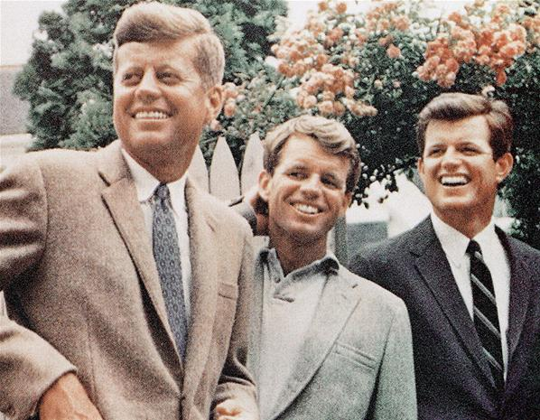

Chương 14

ia đình Kennedy đã làm thay đổi quốc gia của chúng ta, và thay đổi chúng ta, hơn bất kỳ gia đình nào khác trong lịch sử Hoa Kỳ. Dĩ nhiên, thay đổi này cũng phải đơn độc mình họ, thay đổi của đời sống một quốc gia là một sự chuyển biến liên tục và gia đình Kennedy đã lộ diện, đã nhô lên đúng lúc trong lịch sử quốc gia chúng ta và trong lịch sử của thế giới. Chúng ta đang tiến tới gần một thời đại.
Hai cuộc thế chiến và cuộc chiến tiêu hao ở Triều Tiên đã cướp mất của chúng ta biết bao nhiêu nhân tài trẻ tuổi, có thể là những nhà lãnh đạo của quốc gia chúng ta và của thế giới. Sự mất mát lớn nhất trong chiến tranh không phải là tiền bạc. Sự mất mất luôn luôn và mãi mãi vẫn là sự mất mát những thanh niên sáng chói và tài ba trên phương diện lãnh đạo. Trong xứ sở và ở hải ngoại, thế hệ thứ hai hiện thời của chúng ta chỉ còn lại những nhà lãnh đạo hãng nhì.
Dưới thời đại Tống thống Truman và Eisenhower có thể nói là thời kỳ phục hồi. Dân chúng còn kiểm điểm bản thân và xem xét những lĩnh vực quanh đời sống của họ, họ chưa dám nhìn về tương lai xa hơn.
Họ mong muốn được dìu dắt bởi những người mà họ có thế đặt được tính nhiệm của họ.
Nhưng giai đoạn cầm quyền của Eisenhower có thể nói là giai đoạn gây ít nhiều thất vọng. Đồng ý là Eisenhower có nhiều kinh nghiệm và tài ba trên lĩnh vực quân sự, nhưng hiển nhiên, ông không có kinh nghiệm và tài ba trong lĩnh vực chính trị. Đức tính thanh khiết và thẳng thắn của ông phải được công nhận, nhưng sự tiên liệu và chuẩn bị, phải có, đối với một nhà lãnh đạo tài giỏi, ông gần như không có. Tuy vậy theo tôi nghĩ, qua những năm chậm chạp ấy, lại tào ra một môi trường tốt cho dân chúng, để họ có đủ thời giờ chuẩn bị, phản ánh và hiểu thêm các nhu cầu của họ, để họ sắp xếp, tìm kiếm một lối đi mới thích hợp trong đời sống. Việc tìm kiếm này đã dần dần kết tinh được một ước muốn sâu xa hơn, vững chãi hơn, trong tư tưởng non yếu lúc bấy giờ. Tóm lại, tất cả rất, cần thiết cho những kẻ can đảm và anh hùng dấn bước trên hướng đi mới mẻ của họ.
Đúng vào thời gian này, những người đàn ông mang họ Kennedy xuất hiện. Nếu Joseph Patrick Kenned Jr. người anh lớn của họ còn sống, thì sự xuất hiện có thể là quá sớm, và hấp lực của gia đình Kennedy cũng kém hẳn đi, nếu không nói là không có.
John Kennedy đã xuất hiện đúng lúc, đúng con đường cần thiết sự có mặt của ông.
Ông đã đến với sức mạnh truyền thống của Hoa Kỳ, của một giòng họ di trú ba đời ở quốc gia này, của sự giầu có, thành công và quyền thế, qua các hoạt động riêng của ông, ông đã lộ diện như là một vị anh hùng được mong mỏi.
"Những gì đã tạo nên người anh hùng?" Chưa có ai tìm hiểu một cách rõ rệt. Theo tôi, một hành động liều lĩnh ngắn ngủi của một người, không có nghĩa người ấy là một vị anh hùng. Nhiều người có thể được gọi là anh hùng trong chốc lát, qua hành động can đảm nhất thời của họ. Tôi nghĩ: một vị anh hùng thật sự phải được nhìn qua các hành động liên tục của họ và chính bản thân họ gây ra sự tín nhiệm, lòng tin cậy và tối hậu là sự tôn kính.
Giải thích tốt nhất của hai tiếng anh hùng thường được sử dụng trong ngôn ngữ hiện đại là nên lấy nghĩa nguyên thủy của Hy Lạp: "thiên tài của cái đẹp".
Trong một bữa ăn: tôi đã thảo luận với một người bạn có quan điểm chính trị độc lập, về hiện tượng Kennedy: "Vâng. đúng là nguy hiểm, ông ta tuyên bố. Một Kennedy này kế tiếp một Kennedy khác bước vào tòa Bạch ốc, chúng ta sẽ có một đế chế. Kennedy chỉ ở Bạch ốc hai nhiệm kỳ, không thể thêm hai nhiệm kỳ nữa. Không, không, tám năm là quá đủ. Tôi bỏ phiếu cho đảng Công hòa tám năm và rồi quay lại đảng Dân Chủ. Nhưng chắc bà công nhận, một Kennedy và tòa Bạch ốc với tất cả ma lực của ông, dân chúng đã bị mê hoặc và họ muốn ông ta ở lại mãi mãi."
Gia đình Kennedy có ma lực, mỗi người trong gia đình này đều có, nhưng John Kennedy và vợ ông, Jacqueline, có ma lực vô song. Robert Kennedy cũng có ma lực và góp thêm vào ma lực của người anh, sau khi người anh này bị ám sát. Ma lực không luôn luôn có tính chất mời gọi sự yêu thương mà nó còn, thỉnh thoảng, mời gọi sự đố kỵ và bạo hành nữa.
Một chiều ở Arizona, khi tôi đến dự tiệc tại nhà một góa phụ giàu có, một người đàn bà sáu mươi tuổi, thành thật và giản dị, nhưng bà ta đã gây cho tôi sự kinh ngạc. Đó là lúc một thanh niên lên tiếng bàn về Robert Kennedy, và cuối cùng với giọng điệu mến mộ, anh ta cho rằng Robert có thể là vị Tống thống sắp đến của Hoa Kỳ. Khuôn mặt đáng mến của nữ chủ nhân biến đổi luôn luôn. Thật ra, phải nói là một khuôn mặt biểu lộ sự oán ghét vô tả.
" Tôi ao ước có người nào đó sẽ bắn hắn", bà ta nói như hét lên.
Ngẫu nhiên, sau lời nói này chỉ một thời gian ngắn, Robert Kennedy bị ám sát. Nhưng buổi chiều đó, một sự im lặng nặng nề bao phủ lấy tất cả chúng tôi. Không hề có một bàn luận nào quanh thái độ oán ghét kỳ lạ đó. Chúng tôi nói sang những vấn đề khác, nhưng đó chỉ là sự lãng quên trong chốc lát. "Tôi vẫn không thể nào hiểu nổi, sự trái nghịch giữa lòng yêu mến và oán ghét như thế.

Hiện tượng này đã có trong người dân của chúng ta, có lẽ là do kết quả của triết lý dân chủ mà Hoa Kỳ đã và đang theo đuổi: một nơi dung chứa bạo lực bằng nhau trong tình yêu và trong thù hận. Sự trái ngược chưa hề thấy ở bất kỳ dân tộc nào mà tôi từng biết qua. Tôi không hiểu rõ rệt lý do phát sinh hiện tượng này. Có lẽ, một phần nào, chúng ta đã thừa hưởng những gì mà tổ tiên chúng ta để lại. Chúng ta được sinh ra bởi nhưng kẻ phiêu lưu và liều mạng, mà giòng mà cuồng bạo đó vẫn còn chảy trong huyết quản chúng ta. Vâng, tôi đã từng sống giữa nhiều dân tộc, tôi chưa bao giờ biết có sự cuồng bạo nào như trong xứ sở chúng ta - Yêu đương một cách cuồng bạo, oán ghét một cách cuồng bạo. Ở xứ sở này, được yêu mến và bị oán ghét cũng ngay đó. "Phải nhìn thấy cái cảnh một người đàn ông Kennedy được các bà hâm mộ bao quanh xâu xé vồ vập và kêu gào, mới biết được thế nào là nỗi rùng rợn của sự yêu mến. Chính tôi cũng đã từng bị giam giữ trong một đám đông hâm mộ cuồng bạo như thế, cho đến nỗi cánh sát phải giải cứu tôi. Tôi lo sợ sự yêu mến như thế, vì sự yêu mến này có thể đổi sang sự oán ghét lập tức, nếu tôi chỉ có một ngôn ngữ hoặc một hành động sai lầm.
Nhưng có quá nhiều sự cuồng bạo mà người Mỹ chúng ta chấp nhận ở hiện tại và tất cả sự cuồng bạo nàv gần như đều nằm trong sở thích riêng tư. Chúng ta có một sự đối nghịch trong đời sống, mà có thể nói một cách vắn tắt, là bắt nguồn từ sự bất mãn đối với những thành đạt của một cá nhân.
Oán ghét là dĩ nhiên, một trong những hậu quả của sự đố kỵ. Tôi nhận thấy sự đố kỵ đã được xem như là một lỗi thông thường giữa dân tộc chúng ta, kết quả của một hệ thống xã hội đặt căn bản trên sự ganh đua riêng rẽ của từng cá nhân. Do đó, dân chúng Hoa Kỳ trở thành cô độc hơn dân chúng của bất kỳ quốc gia nào khác trên thế giới.
Biết bao nhiêu người Mỹ đã trải qua những đêm dài hoàn toàn cô độc, chỉ làm bạn với chiếc máy truyền hình. Những kẻ trình diễn trên truyền hình đã gây ảnh hưởng, có thể nói là lớn hơn bao giờ hết, đối với dân chúng Hoa Kỳ. Và tôi có thể thêm, ảnh hưởng đó còn vượt hơn những gì mà những kẻ trong lĩnh vực này mong mỏi.
Tuy nhiên, phải công nhận rằng truyền hình góp công khá nhiều trong việc gây dựng sự sùng bái của những người đàn ông mang họ Kennedy, làm nổi lên sự tuấn tú đầy quyến rũ của họ. Và trên màn ảnh nhỏ, nét dạn dĩ, tự tin, kiến thức và sự giàu có của họ như đều hiển hiện một cách linh hoạt. Truyền hình là cơ hội cho những thanh niên có tài rời khỏi bóng tối, nhưng truyền hình cũng có thể làm cho một kẻ vô tài nổi tiếng một sớm một chiều. Chúng ta có thể nhắc lại trường hợp của Adolf Hitler. Con người sinh trưởng trong một gia đình thấp kém và ít học ấy, chỉ nhờ vào sự khai sáng khéo léo của những kẻ vây quanh và khẩu tài của riêng ông, mà suýt nữa Âu châu bị tiêu diệt. Dân tộc Đức luôn luôn dễ bị xúc động trước những kẻ nổi bật, những vị anh hùng, một cách lạ lùng. Sống trong một lãnh thổ gần như bị nhốt kín, một dân tộc thông minh và cần mẫn tột bực, ý thức năng lực vô song của chính họ và nhất là với ý tưởng một dân tộc cứu tinh của các dân tộc khác, đã làm một số người nắm quyền lực trong tay dựng lên một thần tượng, và thần tượng này sẽ có sứ mạng thế dân hành đạo. Một hiện tượng như thế có thể hiếm thấy trong xứ sở mà trong thời đại chúng ta nếu không có sức mạnh của truyền hình tiếp tay. Qua màn ảnh nhỏ tất cả chúng ta cùng lúc nhìn thấy cùng một khuôn mặt, chúng ta cùng nghe một tiếng nói.
Toàn thể quốc gia, qua truyền hình, như quy tụ vào một người. Thật ra, chúng ta có thể không thích người đang xuất hiện trước mặt chúng ta, điều đó đã chứng tỏ một lần qua Richard Nixon. Bởi sự thiếu kinh nghiệm, thiếu tự luyện khi xuất hiện trên màn ảnh nhỏ của ông.
Vì vậy, nếu truyền hình có khuynh hướng qui tụ như đã nói, nó còn làm cho cá nhân xuất hiện phân cách rõ rệt với những kẻ khác. giữa thời đại mà sự già nua đang tan vỡ này.
Hiện tại điện từ thay thế tất cả, đó là phương diện khác. Nhờ điện từ, chúng ta nghe được tin tức mọi nơi trên thế giới. Ngoài sự tìm hiểu, học hỏi về lịch sử và địa dư ở trường.. chúng ta biết được các cuộc xung đột, tranh chấp biên giới. Chúng ta không bao giờ được giải thích trong khi mà có nhiều lý lẽ không thể trốn tránh và giải quyết êm đẹp của mỗi biến cố trong quá khứ lại đang xảy ra trong hiện tại. Và tuổi trẻ đâm ra ngờ vực và giận dỗi đối với những người lớn tuổi, cha mẹ và thầy dạy của họ. Họ chứng tỏ sự ngờ vực của họ qua các hình thức nổi loạn ồn ào, qua bề ngoài lơi lả và qua cách ăn mặc hở hang. Và sa đọa hơn, họ chủ trương hút tốt hơn uống, vì chỉ có ma túy mới tàn hại thân thể họ rõ rệt nhất trước mắt kẻ khác. Và như thế, thời đại đạo mạo già nua, như Richard Nixon một lần đã thất bại trước một John F. Kennedy trẻ trung ra linh động.
Những người đàn ông mang họ Kennedy là ẩn dụ của các sức mạnh trong thời đại điện từ của chúng ta. Họ hăng hái một cách bình thường. Họ không hề chứng tỏ một sự cố gắng nào. Tính khôi hài của họ mang đầy góc cạnh của sự chua chát và cay đắng, biểu thị trạng thái của tuổi trẻ ở hiện tại, vì vậy mà họ trở thành những anh hùng và thêm hy vọng của đám thanh niên.
Khi họ chết, những cái chết dữ dội, và sự dữ dội nàv, phi lý và không rõ căn nguyên như thế, đã diễn tả một khía cạnh phẫn nộ khác của tuổi trẻ. Vì tuổi trẻ, thích phản kháng và bạo động, có thể chính họ cũng ao ước được chết một cái chết dữ dội như thế nhưng chưa bao giờ họ được thỏa nguyện.
Thời đại của chúng ta là một thời đại của tuyệt vọng và nổi loạn. Không lãnh vực nào cho thấy trạng thái này rõ rệt bằng lãnh vực âm nhạc, đặc biệt loại âm nhạc đại chúng ở Hoa Kỳ. Những âm thanh rên rĩ, đứt hơi, la hét, đập phá ấy. Và cũng trong lãnh vực âm nhạc đại chúng, chủ nghĩa cá nhân được lập đi lập lại bằng những âm thanh đơn độc, và cả đến lời tựa và nội dung của chúng nữa, đều có khuynh hướng đẩy người khác xa rời hẳn nhau. Một vài cái tựa: "Của chính tôi, "Tôi chỉ chấp nhận tôi, "Tôi là của tôi "Tôi là tất cả và nhiều nữa, không kế xiết.
Sự cô đơn này còn đầy ý nghĩa hơn trên lãnh vực khiêu vũ. Hiện tại, người ta không nhảy cùng với nhiều người, và ngay cả đến từng cặp cũng nhảy rời xa nhau. Nhưng, sự cô đơn, chia rẽ này không phải là tính cách bất tuyệt. Nó chỉ là đoạn nhạc mở đầu để chờ đợi, chờ đợi một cá nhân, cá nhân đó là người am hiểu nhất và biểu tượng nhất, trong tình trạng của tuổi trẻ hiện thời, của những kẻ cảm thấy không hiểu chính họ đang ao ước được hiểu từ một kẻ khác.
Những kẻ nổi lên tiếng kêu gào hướng về một người mà họ tin tưởng sẽ hiểu họ. Và người hiểu họ sẽ dễ dàng trở thành kẻ độc tôn, và xứ sở chúng ta sẵn sàng chờ đợi hiện tượng này ở hiện tại hơn bao giờ hết. Tuy nhiên, nhà lãnh đạo của họ cũng phải có đầy đủ lý tưởng và truyền thống của người Mỹ. Chẳng hạn như ông ta phải là một người giòng giõi, đã có gia đình. Một người vợ trung thành, có nhan sắc cũng là một điểm chính yếu. Người vợ này phải không được xen vào bất kỳ phương diện hoạt động nào của chồng, nhưng bà ta phái tỏ ra thông minh một cách thích đáng vào lãnh vực nào đó, không dính dáng đến chính trị. Người vợ này cũng phải là người đứng phía sau người chồng, lãnh vai trò phụ bên cạnh người chồng, và không bao giờ được vượt quá giới hạn này. "Trong tất cả những điểm vừa nêu. Tổng thống John Kennedy đã may mắn gồm đủ. Người vợ của ông có nhan sắc, biết tôn trọng vị thế của chồng, nhưng đồng thời nàng cũng có vị thế riêng nổi bật.
Người đàn bà đi cạnh Tổng thống đã mang lại cho ông sự kiêu hãnh trên nhiều phương diện, chẳng hạn như khiếu thẩm mỹ của nàng, đã từng được chứng tỏ khi nàng bước vào tòa Bạch ốc".
Nếu John F.Kennedy không chết, người ta phỏng đoán là ông sẽ ở trong tòa Bạch ốc ít nhất là hai nhiệm kỳ. Sự phỏng đoán này không phải không có bằng chứng, một khi ông vẫn duy trì sự kỳ vọng hiện hữu mà dân chúng đặt vào ông.
° ° °
Có nhiều bàn tán và tin tưởng khác nhau về sự quyết định của Edward Kennedy liên quan đến tương lai của ông. Vẫn chưa có quyết định nào rõ rệt cho thấy ông sẽ mở cuộc chạy đua vào tòa Bạch ốc, ít ra cho đến năm 1976.
Ông cảm thấy trách nhiệm nặng nề đối với thế hệ kế tiếp của giòng họ. Hơn nữa, cuộc đời của ông đã bị tai tiếng. Chỉ còn một vài người bạn có thể duy trì sự trung thành của họ trong tình cảnh này.
Nhưng tôi cho rằng lòng trung thành hoàn toàn dành cho Edward Kennedy phải là gia đình, phải là những người Kennedy thực sự. Còn những người khác, những người không mang ý nghĩa tiềm ẩn của gia đình này, họ sẽ lảng tránh.
Dù cho Edward Kennedy quyết định chạy đua vào Bạch ốc hay không, vị thế của ông vẫn là vị thế khó khăn trong gia đình, dưới sự chăm chú của thế hệ trẻ hơn đang hướng vào ông. Thế hệ trẻ, thế hệ thứ ba Kennedy, sẽ lớn lên với những chuyện ngồi lê đôi mách, với những phỉ báng nhắm vào gia đình chúng. Những đứa lớn tuổi hơn sẽ đọc tin tức qua báo chí, sẽ biết tất cả bóng tối đã phủ xuống gia đình chúng như thế nào.
Ưu tiên, những gì mà Edward Kennedy sẽ làm đối với thế hệ kế tiếp, là làm cách nào khuất phục được niềm tin và sự kính trọng từ các đứa cháu đối với ông và sau đó mới nói đến sự khuất phục sự yêu mến và lòng trung thành của chúng.
Đầu tiên, nếu tôi được phép khuyên ông, rằng ảnh hưởng của ông chỉ có thể mạnh mẽ, nếu ông làm cách nào để thế hệ sau này nhìn thấy sự thành thật hoàn toàn của ông đối với chúng. Khi một đứa trẻ nhỏ tuổi, kính trọng, ao ước sự dẫn dắt và khuyên bảo của ông, nó sẽ tự động làm theo. Dĩ nhiên, chúng phải được nói tất cả sự thật. Tôi tin rằng mọi giấu giếm không qua khỏi sự tìm tòi của tuổi trẻ. Chúng phải biết tất cả sự thật trước khi chúng tìm biết qua sự phỉ báng, chế nhạo từ kẻ khác. Thảm kịch của Edward Kennedy không chỉ là thảm kịch riêng của ông, nhưng nó góp phần vào những thảm kịch đã giáng xuống đại gia đình này. Và các đứa trẻ cũng phải biết rằng chúng sẽ tiếp xúc thường xuyên với lòng đố kỵ, ganh ghét và oán hận.
Tôi không đặt nhiều hy vọng vào sự trung thành tuyệt đối. Con người không có khả năng trung thành như thế. Và hầu hết sự thiếu khả năng này đến từ những cá nhân cảm thấy sự trung thành của họ bị đe dọa. Tôi hy vọng Edward Kennedy biết được điều này.
Dĩ nhiên, ông cũng phải dạy các đứa cháu của ông biết là vẫn có một số người có thể tin cậy được. Chỉ một vài mà thôi. Một vài người này có thể đặt sự yêu mến, tin cậy một cách an toàn và ngoài giới hạn. Dù rằng có những người khác không thể yêu mến và tin cậy được nhưng cũng không cần phải nghi kỵ.
"Những kẻ siêu việt không hề ghen ghét một ai.."
"Ghen ghét chính là sự gậm mòn của mặc cảm. Những kẻ siêu việt không mặc cảm".
Có những người tôi nhận thấy không thể tín nhiệm được, nhưng có thể được mến thích. Tôi có một số bạn - vâng, tôi gọi họ là bạn - mà tôi có thể nói chuyện rất vui vẻ với họ suốt buổi, nhưng tôi không đặt vào họ một sự tin tưởng nào hết. Đừng đặt hy vọng nhiều vào người nào, cha mẹ tôi không dạy tôi như thế, nhưng tôi đã học hỏi được qua những kinh nghiệm đắng cay.
Tất cả những điều này phải được dạy cho những đứa trẻ Kennedy. Và giữa những đứa trẻ này, hy vọng sẽ có một số lại nổi lên, và có thể lại đưa cái tên Kennedy lên cao đến tột đỉnh của nó. Con trai lớn nhất của Robert Kennedy, Joe hiện tại 17 tuổi, Joe là chàng thiếu niên có mặt trong toán dàn chào danh dự ngày tang lễ của người cha, đã săn sóc và dỗ dành các đứa em nhỏ hơn, đã xuất hiện trước quan khách, bắt tay và cám ơn mọi người đến chia buồn, và đã đứng bên cạnh người mẹ lúc hạ huyệt với hai hàng nước mắt lăn dài trên đôi má.
Joe cũng là chàng thiếu niên đã từng theo người chú, Edward sang Âu châu và chứng tỏ truyền thống can đảm của gia đình bằng cách nhảy vào một trận đấu bò ở Tây Ban Nha và lúc tan cuộc, máu đẫm ướt thân vừa đủ gây sự kinh khiếp cho các người bạn của anh ta.
.. Joe thừa hưởng tất của di sản tốt đẹp của giòng họ, và với cái tuổi vừa mới lớn ấy, anh đã chứng tỏ được sự nhanh trí như là một diễn giả thành thuộc, Joe tỏ ra nhiều hứa hẹn.
Robert, em trai của Joe, hai lần sang Phi châu khi mới mười lăm tuổi. Cậu xách máy ảnh theo đoàn người săn bắn và đã chụp được hình nhiều loại thú dữ. Robert thích khoa học và ít lưu ý đến chính trị. Cậu ta có riêng một vườn thú nhỏ, gồm có một chú gấu vẫn còn khá hung dữ, một con rùa vĩ đại, một con chuột xù, một đôi chim ưng và nhiều thú vật chim chóc nhỏ bé khác.
David, em của Robert, là cậu bé được yêu mến nhất trong gia đình Kennedy tỏ ra ham thích các môn thể thao.
Những đứa bé khác vẫn còn thơ ấu. Đứa nhỏ nhất, sinh sau ngày Robert chết, là cô bé Elizabeth.
Gia đình của Robert Kennedy vẫn hiện điện đây đó, ngoại trừ ông. Người góa phụ của ông đã tìm mọi cách để cho các cậu con trai ảnh hưởng nhiều đến sức mạnh của nam tính, nên thường xuyên sắp xếp những cuộc viếng thăm các người bạn của chồng.
Qua đường lối này, các đứa trẻ không chỉ tiếp xúc với những người đàn ông trưởng thành: mà chúng còn tiếp xúc với những người tài ba và sáng chói trong nhiều lĩnh vực như nghệ thuật, khoa học, chính trị và thương mại...
"Có thể nói, trong tất cả những người, đàn bà Kennedy hiện tại, không ai có năng lực và cương quyết bằng Ethel Kennedy và cũng không ai có sự tử tế, nhã nhặn, tự nhiên, sinh động bằng nàng. Cả gia đình đều yêu mến nàng - yêu mến và cảm phục".
Năm cư tang đầu tiên của nàng đã trôi qua. Nàng bắt đầu mở cửa tiếp xúc lại với bạn bè: đặc biệt là bạn bè của các con nàng. Lần đầu tiên kể từ sau ngày chồng chết, nàng mới nhúng tay vào một hoạt động từ thiện bằng cách tham dự một dạ hội khiêu vũ. Nàng xúc tiến việc thành lập cơ sở Robert F.Kennedy, trọng tâm nâng đỡ những thiếu niên có thực tài nhưng không có phương tiện tiến thân. Qua kết quả một cuộc thăm dò của viện Gallup vào tháng giêng năm 1969, Ethel Kennedy được xem là người đàn bà được cảm phục nhất tại Hoa Kỳ, Rose Kennedy đứng hạng nhì.
Ethel còn được xem là người mẹ tiêu biểu nhất đối với công chúng Hoa Kỳ. Rose Kennedy có chín người con, nhưng Ethel có mười một.
Nàng có nhiều ưu thế quan trọng khác. Nàng không đẹp. Vui tươi, khỏe mạnh, linh động, vâng, nhưng nàng không đẹp,và vì thế nàng không hề là một đe dọa đối với những người đàn bà khác.
Ethel, một người đàn bà, có thể trở thành kẻ cầm đầu nhóm Kenlledy. Thêm vào tất cả ưu thế của nàng, nàng đầy đủ tư cách để trở thành kẻ lãnh đạo: nàng có nhiều con trai hơn tất cả. Và những đứa trẻ này cũng có nhiều hứa hẹn ở tương lai. Tóm lại nàng sẽ thay thế vị trí của Rose Kennedy, người cầm đầu thế hệ thứ ba của giòng họ. Con trai lớn nhất của Ethel Kennedy, Joseph Kennedy III, đã tranh cử vào một chức vụ chính trị đầu tiên, mà nếu so sánh với John Fitzgereald Kennedy, chàng thanh niên này còn khởi nghiệp sớm hơn người bác đến mười năm. Vấn đề được đặt ra ở hiện tại, một mình với hai vai trò, vừa là người mẹ vừa là người cha, Ethel có thể thuyết phục các con trai của nàng rời xa hẳn không khí đầy ganh đua của đời sống chính trị không? Hoặc nàng sẽ tiếp tục truyền thống chiến đấu của Kennedy nhằm đạt đến cho được những cao vọng, như gia đình này đã từng làm?
Các thảm kịch của quá khứ sẽ ngăn chặn bước tiến của thế hệ Kennedy thứ ba, hay là họ vẫn dấn bước trên lối đi hướng vào tòa Bạch ốc? Phần nhiều, không hắn là hoàn toàn, tùy thuộc vào một người đàn bà, một người vợ, một người mẹ Kennedy. Nhưng nếu Ethel tái giá, xứ sở của chúng ta có thề thay đổi..
Tôi đã hỏi một người bạn là liệu Ethel có thể tái giá hay không? Ông ta nhấn mạnh: "Chắc chắn nàng sẽ làm lại cuộc đời. Tôi chắc như thế. Còn quá nhiều sinh lực, nàng không thích mãi mãi là một góa phụ cô đơn. Các đứa con của nàng... không thành vấn đề".
Và dân chúng, đám đông, bà biết, họ đang kính mến nàng, họ sẽ không đòi hỏi ở nàng nhưng gì mà họ đòi hỏi một cách nghiệt ngã ở Jacqueline. Nàng có thể nhớ lại, nàng đã hy sinh quá nhiều, một sự hi sinh cho kỷ niệm thần thánh.
"Dân chúng sẽ giữ sự yêu mến của họ đối với nàng." Mặc cảm của nàng sẽ không sâu xa như Jacqueline. Nàng có thể bước thêm bước nữa dễ dàng. Việc này sẽ xảy ra, tôi dám canh đoan".
Một ông bạn khác của tôi cũng có ý kiến trùng hợp. "Nàng sẽ tái giá trong vòng hai năm". Ông ta đoan chắc với tôi.
Nhưng dù cho các người bạn của tôi đều xác tín, tôi tin rằng Ethel không bao giờ tái giá. Và nếu đúng như vậy, nàng sẽ duy trì vị thế trụ cột và sẽ là người cầm đầu gia đình Kennedy.
Bảy năm trước đây, vào ngày 1 tháng 9, tuần báo US News and World Report đã phê bình như sau:
"Trong lịch sử Hoa Kỳ chưa hề có một người đàn bà nào có ba người con trai, đều giữ những chức vụ Quốc gia cao cấp cùng một lúc. Bà Rose Kennedy có lẽ và người đàn bà đầu tiên."
Và hiện tại, có viễn ảnh cho thấy Ethel Kennedy sẽ là người đàn bà thứ hai.
PEARI S. BUCK
Tháng Giêng 1972.